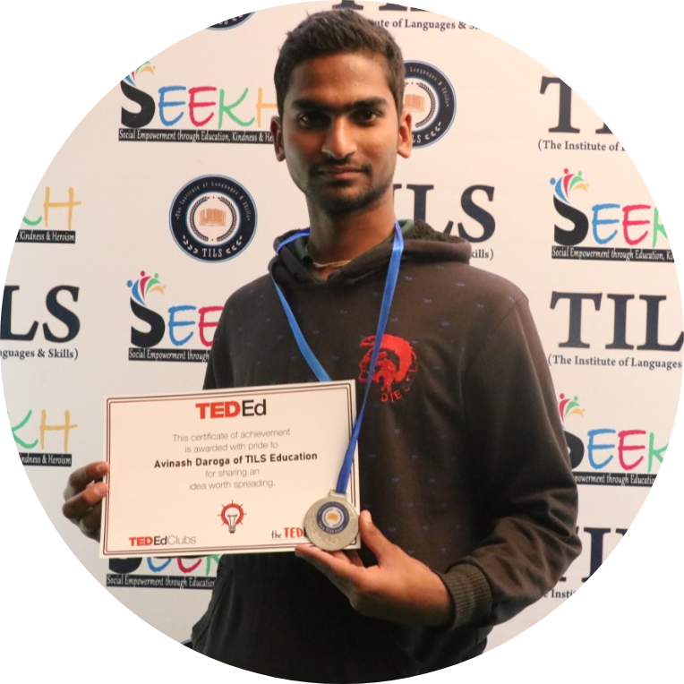

|  |
Avinash DarogaStudent at M.L.V Textile & Engineering College, Bhilwara || Campus Ambassador at E-Cell,IIT Bombay I am a enthusiastic coder and web developer. i love to read books. |
| C Programming | HTML | CSS | C++ | Data Structure and Algoritham | DataBace | Javascript |